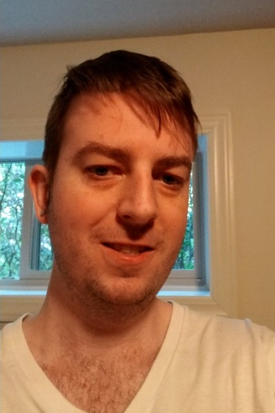

Phlie
Hi, welcome to my site. I like to read and oftentimes write. Sometimes I program, or work hard. Other times it is video games all day, particularly at the moment, driving WRC. I like to imagine, that the way to live life, is to strive for the impossible, and settle somewhere in between, your completed project and your initial dream. That way even if you fail, you should be happy all the way. My name is Phlie, and computers are my forte.
Originally I went to school, university if you will. I studied often, and learned lots, now I get to apply what I learned, to anything I want. I have lots of free time, yet I don't like to waste it. I have tried to make the best, and learn lots in different areas. My favorite subjects are: programming, poetry, full-stack web-development, and music - both listening and making. I also like to read lots and write my ideas down.
In the past ten years that I've been a man, I have learned that I still have lots of time, to ask and answer questions, and ponder why. There is always something more to know, like WTF is Dualism, or how can I render something in 3D. I believe I am me, a thinking-breathing-living-loving machine. You are you. A reader of this site. A ponderer in existence. A being who asks why.
If you love life, and can't wait, at night, for tomorrow, then maybe you are like me, a human being content to just be, thinking all the time, sometimes deeply, sometimes in rhymes, sometimes just about something simple, like what I should eat. In short, we are all human, and together we make existence great.
